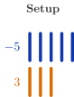
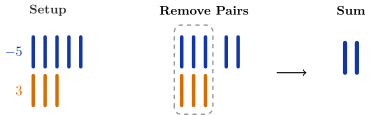
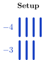
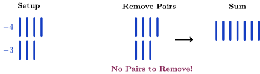
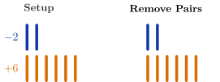

The Set of Integers
In this lesson, you will learn how to add numbers that belong to the set of integers.
The set of integers consists of the whole numbers along with the negative counting
numbers.
\(\begin {aligned} & \textrm {Counting Numbers:} \ \{1, 2, 3, \dots \} \\[1.8ex] & \textrm {Whole Numbers:} \ \{0, 1, 2, 3, \dots \} \\[1.8ex] & \textrm {Integers:} \ \{ \ldots , -3, -2, -1, 0, 1, 2, 3, \ldots \} \\ & \\ \end {aligned} \)
Although negative numbers were understood in China more than 2000 years ago and
later in India, they were not immediately accepted in Europe. For many centuries,
European mathematicians were uncomfortable with the idea of numbers less than
zero and sometimes referred to them as “false” or “absurd” numbers. However,
during the 16th and 17th centuries, as algebra and calculus developed, the
importance of negative numbers became undeniable. Today, negative numbers
are an essential part of mathematics and are commonly used to represent
quantities such as losses, debts, temperatures below zero and elevations below sea
level.
Adding Integers
To understand how to add integers, we will begin with the Chinese Red-Black Rule
and then a number line to visualize addition. Then we will use the concepts of assets
and debts to understand addition in a real-world context. These approaches will lead
us to two rules: one for adding numbers with the same sign and another for adding
numbers with different signs.
The Red-Black Rule
Negative numbers were first used systematically in ancient China. In The Nine
Chapters on the Mathematical Art (written between about 200 BC and 100 AD),
Chinese mathematicians used counting rods to represent numbers. Red rods were
used for positive numbers and black rods for negative numbers. For example, the
number 3 was represented by three red rods and the number \(-2\) was represented by two
black rods. These rods were used as a calculator of sorts for financial transactions
involving profits and losses and to solve simple equations. The Red-Black Rule is
described below.
- A red rod represents \(1\) and a black rod \(-1.\)
- To find the total of profits (red) and losses (black), begin by placing rods
on a board to represent each number.
- Since a profit and an equal loss result in 0, gather all pairs of red and
black rods and remove them.
- The total is what remains.
Since red and black can be difficult for some people to distinguish, we will use
orange rods to represent positive numbers (+) and blue rods to represent
negative numbers (–). We will now refer to this rule as the Orange-Blue
Rule.
Find the sum \(-5+3\) using the Orange-Blue Rule.
We begin with five blue rods to represent the number \(-5\) and three orange rods to
represent the number \(3.\)

Show Alt Text
The “Setup“ section showing five blue vertical bars
representing negative 5 and below them are three orange vertical bars representing 3.
Next, we remove all pairs of orange and blue rods. The sum is what remains.

Show Alt Text
A diagram
modeling the addition of a negative number and a positve number using vertical
color-coded rods. In the “Setup” section, on the left, five blue bars represent \(-5\) and
below are three orange bars representing 3. In the “Remove Pairs” section, in the
middle, the three orange bars are paired vertically with three of the blue bars inside a
dashed box to show they cancel each other out, leaving two blue bars outside the box.
A black arrow points to “Sum” section which shows the two remaining blue bars.
Count the number of bars that remain to find the sum. Remember to use the correct
sign.
\(-5 + 3 = \answer {-2}\)
Find the sum \(-4+(-3)\) using the Orange-Blue Rule.
We begin with four blue rods to represent the number \(-4\) and three blue rods to
represent the number \(-3.\)

Show Alt Text
The “Setup” section showing four blue vertical bars
representing negative 4 and below them are three blue vertical bars representing
negative 3.
Since we started with only blue rods, there are no orange-blue pairs to remove.

Show Alt Text
A
diagram modeling the addition of two negative numbers using vertical color-coded
rods. In the “Setup” section, on the left, there are four blue bars representing
negative 4 and below are three blue bars representing negative 3. The “Remove Pairs”
section, in the middle, is the same as the “Setup” section. A caption below the rods
reads “No Pairs to Remove!” because all rods are the same color. A black
arrow points to the “Sum” section, which shows all seven blue rods together.
Count the number of bars that remain to find the sum. Remember to use the correct
sign.
\(-4 + (-3) = \answer {-7}\)
Use the Blue-Orange Rule to find the sum
\(-2+6.\) The problem has been started for you
below.

Show Alt Text
A diagram modeling the addition of a negative number and a positive number using
vertical color-coded rods. In the “Setup” section, on the left, there are two blue
vertical bars representing negative 2 and six orange rods representing 6. The
“Remove Pairs” section, on the right, is the same as the “Setup” section.
Count the number of bars that remain to find the sum. Remember to use the correct
sign.
\(-2 + 6 = \answer {4} \)
The use of colors in the Orange-Blue Rule is not necessary. Below, the first example
has been redone using a plus sign (\(+\)) for positive \(1\) and a minus sign (\(-\)) for \(-1.\) You can
also use things like rocks and sticks or pennies and dimes—the sky’s the limit! Try
modifying the rule, using your own way to represent positive and negative numbers.
Be creative!
Find the sum \(-5+3\) using a plus sign \((+)\) for \(1\) and a minus sign \((-)\) for \(-1.\)
We begin with five minus signs \((-)\) to represent the number \(-5\) and three plus signs \((+)\)
to represent the number \(3.\)
Show Alt Text
The ‘Setup’ showing five minus signs to represent \(-5\)
and below three plus signs represent \(3.\)
Next, we remove all plus-minus pairs. The sum is what remains.
Show Alt Text
A diagram modeling the addition of a negative number and a positive number using
plus and minus signs. In the “Setup” section, on the left, five minus signs represent
negative 5 and below them three plus signs represent 3. In the “Remove Pairs”
section, in the middle, three minus signs and three plus signs are grouped inside a
dashed box to show that they cancel. Two minus signs remain outside the box. A
black arrow points to the “Sum” section which shows two minus signs labeled
negative 2.
\(-5 +3 = -2 \)
Although this modified rule isn’t overly creative, it makes the answer quite
clear.